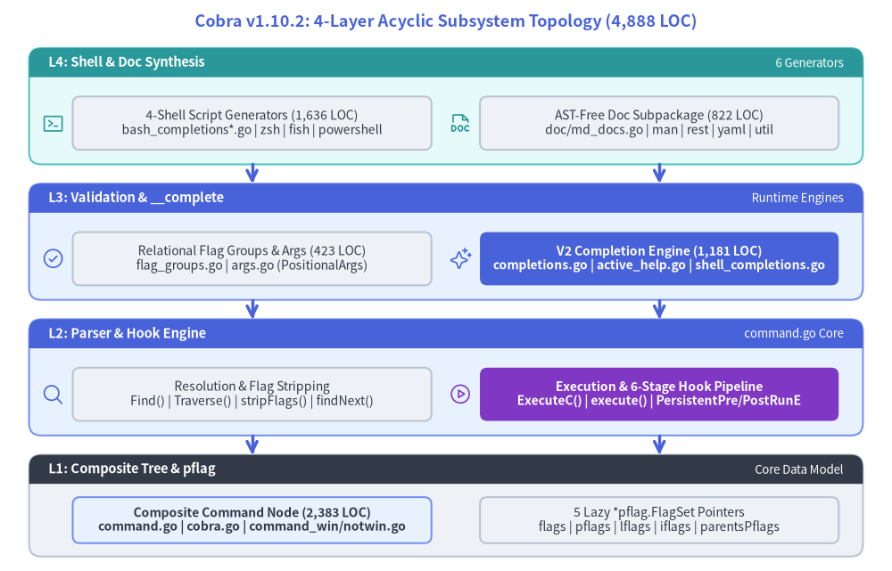
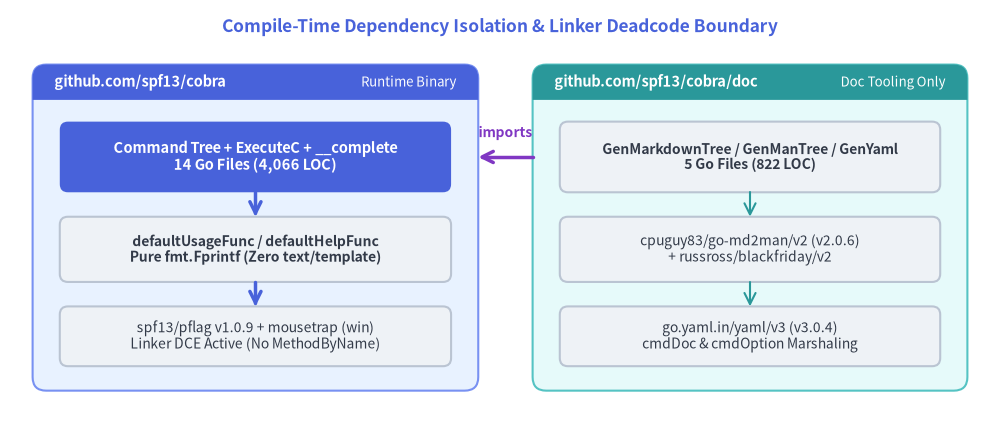

Cobra v1.10.2 Internal Architecture Guide
Welcome to the source-level internal architecture reference for spf13/cobra v1.10.2. This guide dissects the 19 non-test Go source files (4,888 LOC) across the root github.com/spf13/cobra package and the github.com/spf13/cobra/doc subpackage, tracing every data structure, flag resolution invariant, lifecycle hook dispatch loop, and shell protocol state machine directly to source lines.

Source Code
from drawlib.canvas import save, setup
from drawlib.icons import phosphor
from drawlib.lines import line
from drawlib.shapes import rectangle
from drawlib.smartarts import Panel
from drawlib.styles import Styles
from drawlib.text import text
setup(width=184, height=118)
text(
(92, 113.5),
"Cobra v1.10.2: 4-Layer Acyclic Subsystem Topology (4,888 LOC)",
style=Styles.PrimaryBold.patch(text_size=13.0),
)
# Layer 4 (Top): Synthesis & Shell Layer
Panel(
"L4: Shell & Doc Synthesis",
"6 Generators",
style=Styles.SecondaryNeutral,
header_style=Styles.SecondaryFlat,
text_style=Styles.WhiteBold.patch(text_size=10.5),
description_style=Styles.White.patch(text_size=9.5),
header_height=6.0,
).draw((6, 84), width=172, height=24)
rectangle(
(52, 92.5),
width=74,
height=11,
style=Styles.Neutral.patch(shape_r=1.5),
text="4-Shell Script Generators (1,636 LOC)\nbash_completions*.go | zsh | fish | powershell",
text_style=Styles.Dark.patch(text_size=10.0),
)
phosphor.terminal_window((11, 92.5), width=4.8, style=Styles.Secondary)
rectangle(
(136, 92.5),
width=74,
height=11,
style=Styles.Neutral.patch(shape_r=1.5),
text="AST-Free Doc Subpackage (822 LOC)\ndoc/md_docs.go | man | rest | yaml | util",
text_style=Styles.Dark.patch(text_size=10.0),
)
phosphor.file_doc((95, 92.5), width=4.8, style=Styles.Secondary)
# Layer 3: Runtime Completion & Validation Layer
Panel(
"L3: Validation & __complete",
"Runtime Engines",
style=Styles.PrimaryNeutral,
header_style=Styles.PrimaryFlat,
text_style=Styles.WhiteBold.patch(text_size=10.5),
description_style=Styles.White.patch(text_size=9.5),
header_height=6.0,
).draw((6, 56), width=172, height=24)
rectangle(
(52, 64.5),
width=74,
height=11,
style=Styles.Neutral.patch(shape_r=1.5),
text="Relational Flag Groups & Args (423 LOC)\nflag_groups.go | args.go (PositionalArgs)",
text_style=Styles.Dark.patch(text_size=10.0),
)
phosphor.check_circle((11, 64.5), width=4.8, style=Styles.Primary)
rectangle(
(136, 64.5),
width=74,
height=11,
style=Styles.PrimaryFlat.patch(shape_r=1.5),
text="V2 Completion Engine (1,181 LOC)\ncompletions.go | active_help.go | shell_completions.go",
text_style=Styles.WhiteBold.patch(text_size=10.0),
)
phosphor.sparkle((95, 64.5), width=4.8, style=Styles.Primary)
# Layer 2: Parser & Lifecycle Dispatch Engine
Panel(
"L2: Parser & Hook Engine",
"command.go Core",
style=Styles.PrimaryNeutral,
header_style=Styles.PrimaryFlat,
text_style=Styles.WhiteBold.patch(text_size=10.5),
description_style=Styles.White.patch(text_size=9.5),
header_height=6.0,
).draw((6, 28), width=172, height=24)
rectangle(
(52, 36.5),
width=74,
height=11,
style=Styles.Neutral.patch(shape_r=1.5),
text="Resolution & Flag Stripping\nFind() | Traverse() | stripFlags() | findNext()",
text_style=Styles.Dark.patch(text_size=10.0),
)
phosphor.magnifying_glass((11, 36.5), width=4.8, style=Styles.Primary)
rectangle(
(136, 36.5),
width=74,
height=11,
style=Styles.AccentFlat.patch(shape_r=1.5),
text="Execution & 6-Stage Hook Pipeline\nExecuteC() | execute() | PersistentPre/PostRunE",
text_style=Styles.WhiteBold.patch(text_size=10.0),
)
phosphor.play_circle((95, 36.5), width=4.8, style=Styles.Accent)
# Layer 1 (Bottom): Composite Tree & pflag Foundation
Panel(
"L1: Composite Tree & pflag",
"Core Data Model",
style=Styles.Neutral,
header_style=Styles.DarkFlat,
text_style=Styles.WhiteBold.patch(text_size=10.5),
description_style=Styles.White.patch(text_size=9.5),
header_height=6.0,
).draw((6, 3), width=172, height=21)
rectangle(
(52, 10.5),
width=74,
height=9.5,
style=Styles.PrimaryNeutral.patch(shape_r=1.5),
text="Composite Command Node (2,383 LOC)\ncommand.go | cobra.go | command_win/notwin.go",
text_style=Styles.DarkBold.patch(text_size=10.0),
)
rectangle(
(136, 10.5),
width=74,
height=9.5,
style=Styles.Neutral.patch(shape_r=1.5),
text="5 Lazy *pflag.FlagSet Pointers\nflags | pflags | lflags | iflags | parentsPflags",
text_style=Styles.Dark.patch(text_size=10.0),
)
line((52, 84), (52, 80), arrow_head="->", style=Styles.PrimaryBold)
line((136, 84), (136, 80), arrow_head="->", style=Styles.PrimaryBold)
line((52, 56), (52, 52), arrow_head="->", style=Styles.PrimaryBold)
line((136, 56), (136, 52), arrow_head="->", style=Styles.PrimaryBold)
line((52, 28), (52, 24), arrow_head="->", style=Styles.PrimaryBold)
line((136, 28), (136, 24), arrow_head="->", style=Styles.PrimaryBold)
save()
1. Why Cobra Splits cobra and cobra/doc
Cobra v1.10.2 is intentionally partitioned into two Go packages within a single Go module (module github.com/spf13/cobra):
github.com/spf13/cobra(Root Package —14non-test files,4,066 LOC):- Runtime Dependency Footprint: Depends solely on
github.com/spf13/pflag v1.0.9(POSIX/GNU flag parsing) andgithub.com/inconshreveable/mousetrap v1.1.0(Windowsexplorer.exelaunch detection, compiled only under//go:build windowsincommand_win.go). - Deadcode Elimination Guarantee: Default help, usage, and version rendering (
defaultUsageFunc,defaultHelpFunc,defaultVersionFuncincommand.go:1974–2072) use directfmt.Fprintfwriters instead oftext/template. Unless an application explicitly callsSetUsageTemplate,SetHelpTemplate, orSetVersionTemplate(which invoketmpl()incobra.go:179), the Go linker provesreflect.Value.MethodByNameis unreachable and strips unused exported methods across the entire binary (TestDeadcodeEliminationincobra_test.go:245–301).
- Runtime Dependency Footprint: Depends solely on
github.com/spf13/cobra/doc(Documentation Subpackage —5non-test files,822 LOC):- Isolated Transitive Dependencies: Pulls in
github.com/cpuguy83/go-md2man/v2 v2.0.6(andrussross/blackfriday/v2) for roff man-page rendering plusgo.yaml.in/yaml/v3 v3.0.4for YAML serialization. - Because production CLI binaries import only
github.com/spf13/cobraunless generating offline docs, normal CLI builds never link the Markdown/YAML parsers into the production executable.
- Isolated Transitive Dependencies: Pulls in

Source Code
from drawlib.canvas import save, setup
from drawlib.lines import line
from drawlib.shapes import rectangle
from drawlib.smartarts import Panel
from drawlib.styles import Styles
from drawlib.text import text
setup(width=184, height=82)
text(
(92, 77),
"Compile-Time Dependency Isolation & Linker Deadcode Boundary",
style=Styles.PrimaryBold.patch(text_size=12.5),
)
# Left Panel: Core Runtime Binary
Panel(
"github.com/spf13/cobra",
"Runtime Binary",
style=Styles.PrimaryNeutral,
header_style=Styles.PrimaryFlat,
text_style=Styles.WhiteBold.patch(text_size=10.5),
description_style=Styles.White.patch(text_size=9.5),
header_height=6.5,
).draw((6, 10), width=82, height=60)
rectangle(
(47, 53),
width=72,
height=13,
style=Styles.PrimaryFlat.patch(shape_r=1.5),
text="Command Tree + ExecuteC + __complete\n14 Go Files (4,066 LOC)",
text_style=Styles.WhiteBold.patch(text_size=10.5),
)
rectangle(
(47, 36),
width=72,
height=12,
style=Styles.Neutral.patch(shape_r=1.5),
text="defaultUsageFunc / defaultHelpFunc\nPure fmt.Fprintf (Zero text/template)",
text_style=Styles.DarkBold.patch(text_size=10.0),
)
rectangle(
(47, 20),
width=72,
height=11,
style=Styles.Neutral.patch(shape_r=1.5),
text="spf13/pflag v1.0.9 + mousetrap (win)\nLinker DCE Active (No MethodByName)",
text_style=Styles.Dark.patch(text_size=10.0),
)
line((47, 46.5), (47, 42), arrow_head="->", style=Styles.PrimaryBold)
line((47, 30), (47, 25.5), arrow_head="->", style=Styles.PrimaryBold)
# Right Panel: Offline Doc Generator Subpackage
Panel(
"github.com/spf13/cobra/doc",
"Doc Tooling Only",
style=Styles.SecondaryNeutral,
header_style=Styles.SecondaryFlat,
text_style=Styles.WhiteBold.patch(text_size=10.5),
description_style=Styles.White.patch(text_size=9.5),
header_height=6.5,
).draw((98, 10), width=80, height=60)
rectangle(
(138, 53),
width=70,
height=13,
style=Styles.Neutral.patch(shape_r=1.5),
text="GenMarkdownTree / GenManTree / GenYaml\n5 Go Files (822 LOC)",
text_style=Styles.DarkBold.patch(text_size=10.0),
)
rectangle(
(138, 36),
width=70,
height=12,
style=Styles.Neutral.patch(shape_r=1.5),
text="cpuguy83/go-md2man/v2 (v2.0.6)\n+ russross/blackfriday/v2",
text_style=Styles.Dark.patch(text_size=10.0),
)
rectangle(
(138, 20),
width=70,
height=11,
style=Styles.Neutral.patch(shape_r=1.5),
text="go.yaml.in/yaml/v3 (v3.0.4)\ncmdDoc & cmdOption Marshaling",
text_style=Styles.Dark.patch(text_size=10.0),
)
line((138, 46.5), (138, 42), arrow_head="->", style=Styles.Secondary)
line((138, 30), (138, 25.5), arrow_head="->", style=Styles.Secondary)
# Cross-package arrow: doc imports cobra
line((98, 53), (88, 53), arrow_head="->", style=Styles.AccentBold)
text((93, 57.5), "imports", style=Styles.AccentBold.patch(text_size=10.0))
save()
2. Source File Inventory (19 Non-Test Files, 4,888 LOC)
Every subsystem in this guide maps to specific files in the repository:
| Layer | Subsystem | Source Files (spf13/cobra v1.10.2) |
Non-Test LOC | Key Internal Symbols |
|---|---|---|---|---|
| L1 | Composite Tree & FlagSet Topology |
command.go, cobra.go, command_win.go, command_notwin.go |
2,383 |
Command, AddCommand, mergePersistentFlags, updateParentsPflags, tmpl, defaultUsageFunc |
| L2 | Parser & Command Resolution | command.go (L654–L897) |
(in command.go) |
Find, Traverse, stripFlags, argsMinusFirstX, findNext, hasNoOptDefVal, ld |
| L2 | Lifecycle Execution Engine | command.go (L905–L1314) |
(in command.go) |
ExecuteContextC, ExecuteC, execute, preRun, postRun, checkCommandGroups |
| L3 | Relational Flag Groups & Args | flag_groups.go (291), args.go (132) |
423 |
ValidateFlagGroups, processFlagForGroupAnnotation, enforceFlagGroupsForCompletion, MatchAll, legacyArgs |
| L3 | Completion V2 Runtime Engine | completions.go (1,021), active_help.go (61), shell_completions.go (99) |
1,181 |
initCompleteCmd, getCompletions, checkIfFlagCompletion, ShellCompDirective, AppendActiveHelp |
| L4 | 4-Shell Script Generators | bash_completionsV2.go (485), bash_completions.go (649), zsh_completions.go (309), fish_completions.go (293), powershell_completions.go (351) |
2,087 (incl. legacy v1) |
genBashComp, genZshComp, genFishComp, genPowerShellComp |
| L4 | AST-Free Reference Doc Synthesis | doc/md_docs.go (159), doc/man_docs.go (247), doc/rest_docs.go (187), doc/yaml_docs.go (176), doc/util.go (53) |
822 |
GenMarkdownCustom, GenMan, GenReSTCustom, GenYamlCustom, hasSeeAlso, byName |
3. Deep-Dive Architecture Chapters
Navigate directly to any of the six internal architecture chapters:
| Chapter | Architectural Focus | Core Source Files Covered |
|---|---|---|
| 1. Command Tree & FlagSet Topology | GoF Composite pointers (parent, commands), padding caches, the 5 lazy *pflag.FlagSet fields (flags, pflags, lflags, iflags, parentsPflags), mergePersistentFlags(), and Go linker deadcode elimination (TestDeadcodeElimination). |
command.go, cobra.go, cobra_test.go |
| 2. Find, Traverse & stripFlags Parser | Find vs Traverse resolution semantics, stripFlags() stateless token scanner, NoOptDefVal short/long flag value consumption, argsMinusFirstX, and findNext() subcommand matching precedence. |
command.go:654–881 |
| 3. ExecuteC, execute() & Hook Chain | ExecuteContextC -> ExecuteC root re-anchoring, Windows mousetrap, lazy help/__complete/completion injection, c.execute() validation order, and the 6-stage PersistentPreRunE..PersistentPostRunE hook chain (EnableTraverseRunHooks). |
command.go:905–1314, command_win.go |
| 4. Annotation Flag Groups & Validators | Storing relational constraints inside pflag.Flag.Annotations, ValidateFlagGroups() status matrices, dynamic completion mutation via enforceFlagGroupsForCompletion(), and PositionalArgs functional combinators (MatchAll, OnlyValidArgs). |
flag_groups.go, args.go |
| 5. __complete Protocol & Shell Scripts | Hidden __complete / __completeNoDesc command injection, getCompletions() state machine, checkIfFlagCompletion(), -- boundary probing via NArg(), _activeHelp_ markers, :directive bitmask wire protocol, and 4-shell script adapters. |
completions.go, active_help.go, *_completions*.go |
| 6. AST-Free cobra/doc Generators | Live *cobra.Command tree introspection without AST parsing, recursive post-order *TreeCustom traversal, hasSeeAlso and byName cross-linking, go-md2man/v2 roff pipeline (SOURCE_DATE_EPOCH), and yaml/v3 forceMultiLine serialization. |
doc/md_docs.go, doc/man_docs.go, doc/rest_docs.go, doc/yaml_docs.go, doc/util.go |
4. Companion Portals & Ecosystem Links
This Internal Architecture Guide is part of a four-portal documentation suite for spf13/cobra v1.10.2:
- Cobra User Guide (
https://cobra.drawlib.com/user_guide/): Task-oriented developer tutorials, CLI patterns, flag binding with Viper, and shell completion setup. - Cobra API Reference (
https://cobra.drawlib.com/api/): Complete signature catalog for exported types, methods, functions, constants, and variables incobraandcobra/doc. - PNI501 Diagnostic Report (
https://cobra.drawlib.com/pni501/): Static analysis, test coverage metrics, and architectural health audit for Cobra v1.10.2.